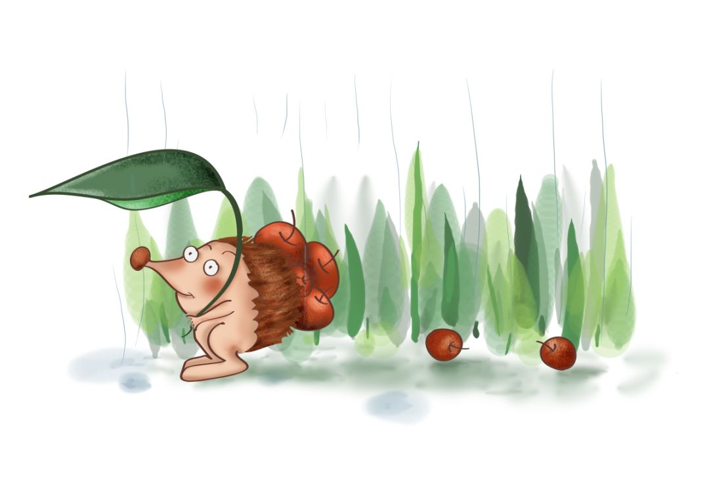
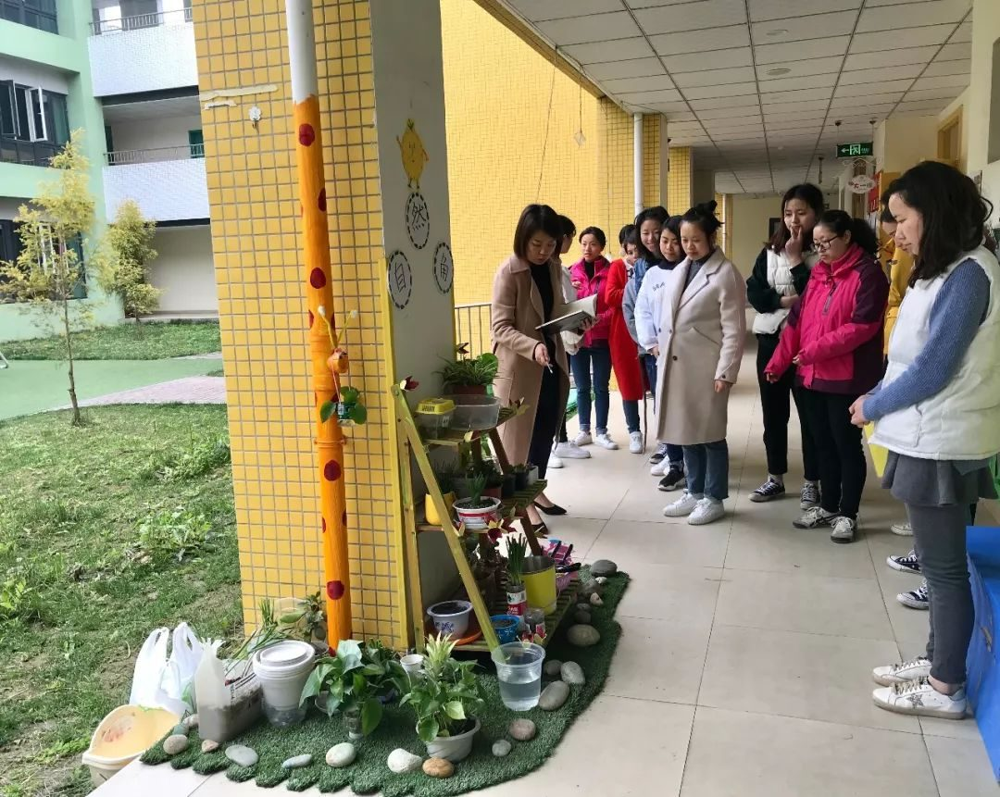
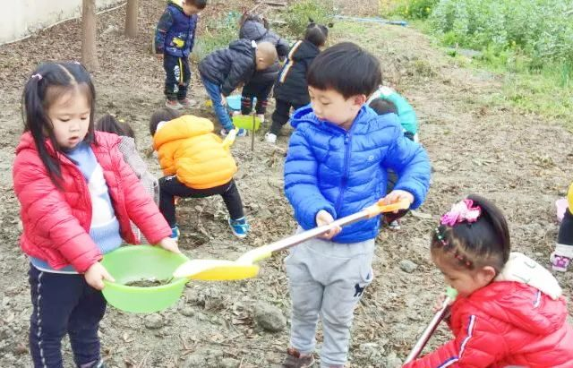
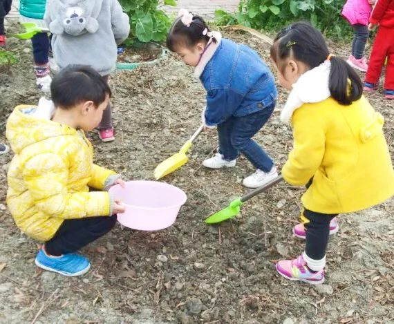
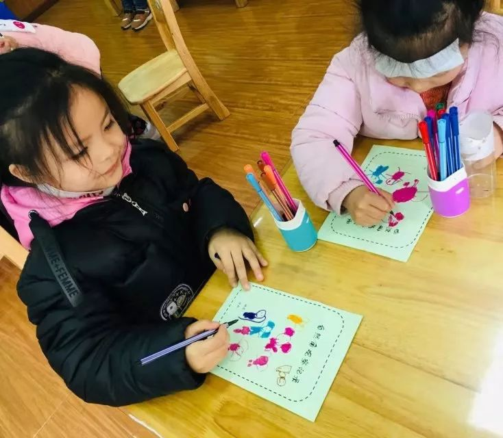
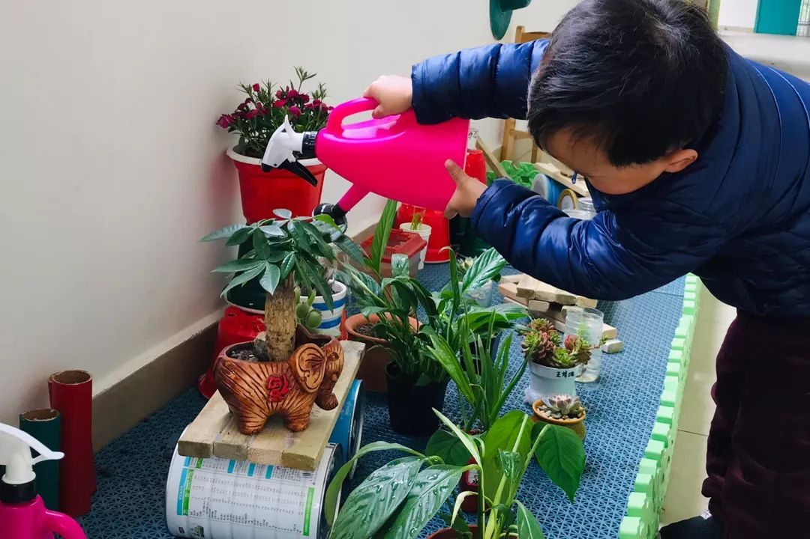

成都市双流区九江万家幼儿园 2019-03-19 16:34 发表于四川
幼儿园自然角是大自然的缩影，是孩子们观察自然，进行早期科学学习与探索的另一个世界，在自然角里，幼儿可以学到许多日常生活中接触不到的东西。为了让幼儿接收更多的科学教育，老师们结合植树节于本周开展了节日教育并添置了班级自然角，老师们也在2019年3月15日对自然角进行了交流学习。
春天给我们带来了春雨，滋润了干涸的地
春天带来了绿色，带来了无限的生机........
同时也提醒着
新一轮的播种

自然角创造特色

本次自然角创设做到了班班有特色，处处显新意。在整个自然角创设过程中，教师、家长、幼儿共同收集自然资源和废旧物品，教师们将废旧饮料瓶、木板、奶粉桶、竹筒等，变成了形态各异的花盆、支架、小装饰等。让狭小的阳台、走廊空间和角落空地变成了生机盎然自然角。

给土地爷爷松松土

翻土的过程也是探索的过程————
此时各班的孩子也忙得不可开交，他们在老师的带领下开始讨论计划自己要种什么，然后开始铲土、松土、浇水、播种、忙得不亦乐乎。自然角就是一个小型的的生态园，种植区、观赏区、养殖区、认知区等应有尽有、品种繁多，这里成了孩子们最喜欢的学习乐园。



“给我们的小种子浇水”
他们就会成长的很快哦！————————

此次的交流学习中，每位老师都对班级创设自然角的过程进行了解说，通过交流学习，充分的展现教师们的个性和智慧，使教师在自然角的创设和管理上有了更多的启示和思考，同时在这个自然角里，幼儿充分的展现了自己主人翁的身份，幼儿通过思考讨论、探索实践对动植物的生命有了新层次的理解，进而使得幼儿探究新事物的能力得到深层次的发展与提升。


阅读 234
分享 收藏
赞 8